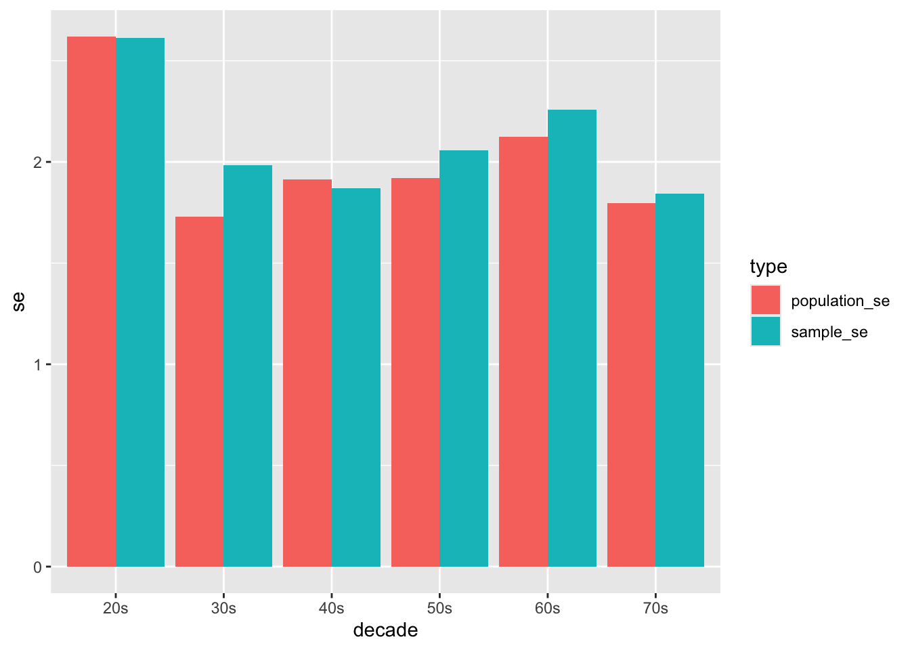

── Attaching core tidyverse packages ──────────────────────── tidyverse 2.0.0 ──
✔ dplyr 1.1.4 ✔ readr 2.1.5
✔ forcats 1.0.0 ✔ stringr 1.5.1
✔ ggplot2 3.5.1 ✔ tibble 3.2.1
✔ lubridate 1.9.3 ✔ tidyr 1.3.1
✔ purrr 1.0.2
── Conflicts ────────────────────────────────────────── tidyverse_conflicts() ──
✖ dplyr::filter() masks stats::filter()
✖ dplyr::lag() masks stats::lag()
ℹ Use the conflicted package (<http://conflicted.r-lib.org/>) to force all conflicts to become errors
library(dplyr)
step 1-3
d <-read_csv("https://raw.githubusercontent.com/difiore/ada-datasets/main/IMDB-movies.csv")
Rows: 28938 Columns: 10
── Column specification ────────────────────────────────────────────────────────
Delimiter: ","
chr (6): tconst, titleType, primaryTitle, genres, nconst, director
dbl (4): startYear, runtimeMinutes, averageRating, numVotes
ℹ Use `spec()` to retrieve the full column specification for this data.
ℹ Specify the column types or set `show_col_types = FALSE` to quiet this message.
population_result <- d %>%group_by(decade) %>%summarise(population_mean =mean(runtimeMinutes, na.rm=T),population_sd =sd(runtimeMinutes, na.rm=T),population_se =sd(runtimeMinutes, na.rm=T)/sqrt(100) )comparision <-left_join(sample_results, population_result, by="decade")comparision_mean_long <- comparision %>%pivot_longer(cols=c(population_mean, sample_mean),names_to ="type", values_to ="mean")ggplot(comparision_mean_long, aes(x = decade, y = mean, fill = type)) +geom_bar(stat ="identity", position ="dodge")
# The sample means and population means are generally aligned with small deviations. This indicates the sample means are good approximations of the population means.comparision_se_long <- comparision %>%pivot_longer(cols=c(population_se, sample_se),names_to ="type", values_to ="se")ggplot(comparision_se_long, aes(x = decade, y = se, fill = type)) +geom_bar(stat ="identity", position ="dodge")

# The sample SEs and population SEs are generally aligned with small deviations. This indicates the sample SEs are good approximations of the population SEs.
step 8
library(mosaic)
Registered S3 method overwritten by 'mosaic':
method from
fortify.SpatialPolygonsDataFrame ggplot2
The 'mosaic' package masks several functions from core packages in order to add
additional features. The original behavior of these functions should not be affected by this.
Attaching package: 'mosaic'
The following object is masked from 'package:Matrix':
mean
The following objects are masked from 'package:dplyr':
count, do, tally
The following object is masked from 'package:purrr':
cross
The following object is masked from 'package:ggplot2':
stat
The following objects are masked from 'package:stats':
binom.test, cor, cor.test, cov, fivenum, IQR, median, prop.test,
quantile, sd, t.test, var
The following objects are masked from 'package:base':
max, mean, min, prod, range, sample, sum
sampling_distribution <- d %>%group_by(decade) %>%do(data.frame(sample_mean =replicate(1000, mean(sample(d$runtimeMinutes, 100, replace = F ), na.rm=T)),sample_sd =replicate(1000, sd(sample(d$runtimeMinutes, 100, replace = F ), na.rm=T)) ))sampling_summary <- sampling_distribution %>%group_by(decade) %>%summarise(mean_of_sample_means =mean(sample_mean, na.rm =TRUE),sd_of_sample_means =sd(sample_mean, na.rm =TRUE))ggplot(sampling_distribution, aes(x = sample_mean)) +geom_histogram(binwidth =2, fill ="blue", alpha =0.7, color ="black") +facet_wrap(~decade)
ggplot(sampling_distribution, aes(x = sample_sd)) +geom_histogram(binwidth =2, fill ="blue", alpha =0.7, color ="black") +facet_wrap(~decade)
The shape is a normal distribution due to the Central Limit Theorem.
The comparison shows that the SE estimated from the sampling distribution are generally close to the SE from the population, indicating the repeated sampling is a reliable estimate of the true SE.
However, the SE from the first sample generally shows a larger deviation from the true SE, which means statistics from the first sample is not always reliable due to sampling variability.
Although the SE from the first sample is expected to be larger than the SE from the sampling distribution, it is not true for all cases. This can be explained by the variability in random sampling.
Challenge 2
step1-2
z <-read_csv("https://raw.githubusercontent.com/difiore/ada-datasets/main/zombies.csv")
Rows: 1000 Columns: 10
── Column specification ────────────────────────────────────────────────────────
Delimiter: ","
chr (4): first_name, last_name, gender, major
dbl (6): id, height, weight, zombies_killed, years_of_education, age
ℹ Use `spec()` to retrieve the full column specification for this data.
ℹ Specify the column types or set `show_col_types = FALSE` to quiet this message.
Height and weight seem to have a positive correlation with age. As age increases, height and weight tend to increase. Also, males have an overall higher height and weight values.
step 5
hist(z$height)
qqnorm(z$height)
hist(z$weight)
qqnorm(z$weight)
hist(z$age)
qqnorm(z$age)
hist(z$zombies_killed)
qqnorm(z$zombies_killed)
hist(z$years_of_education)
qqnorm(z$years_of_education)
Height, weight, and age are drawn from a normal distribution. Number of years of education and number of zombies they have killed are not. They are likely drawn from a poisson distribution.
Warning: Returning more (or less) than 1 row per `summarise()` group was deprecated in
dplyr 1.1.0.
ℹ Please use `reframe()` instead.
ℹ When switching from `summarise()` to `reframe()`, remember that `reframe()`
always returns an ungrouped data frame and adjust accordingly.